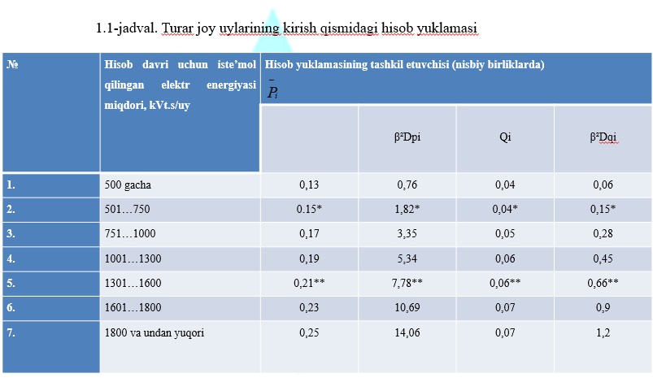
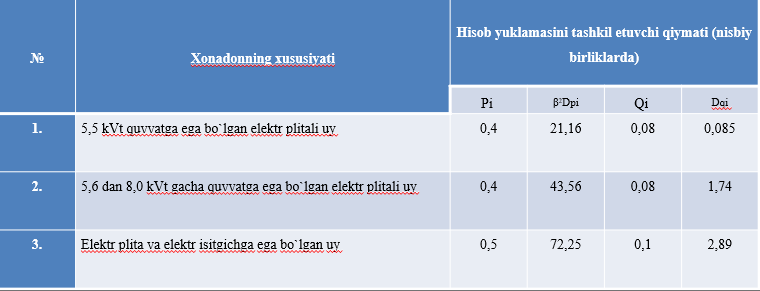
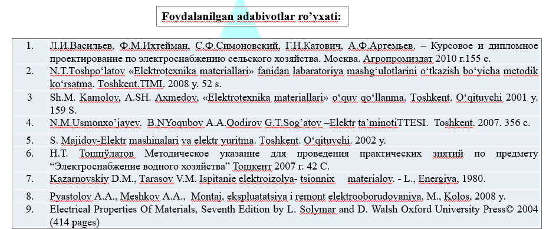
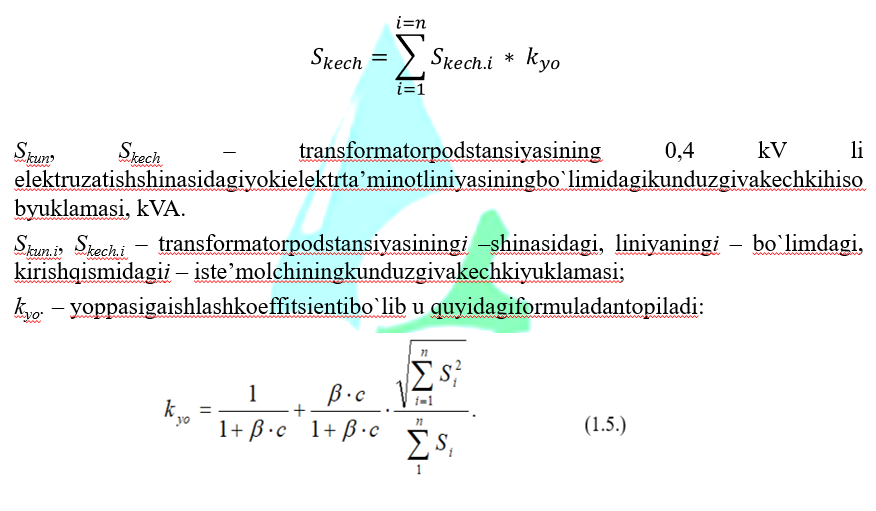
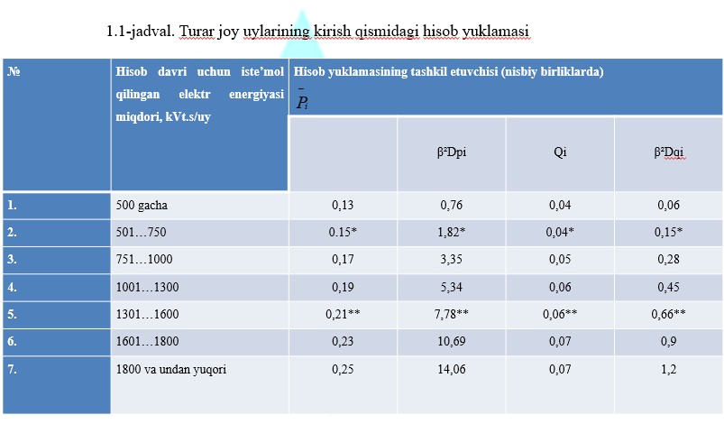
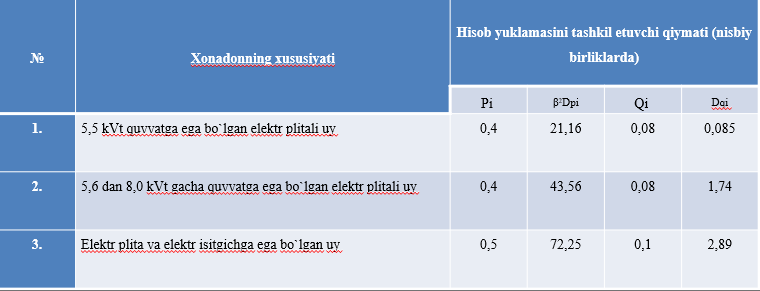
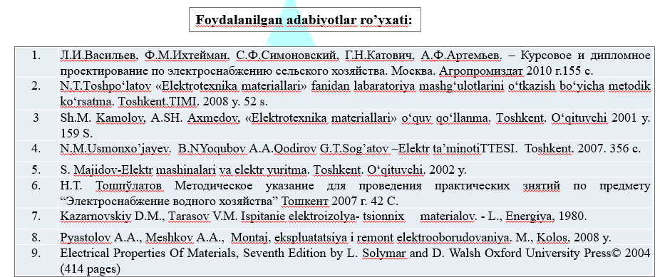
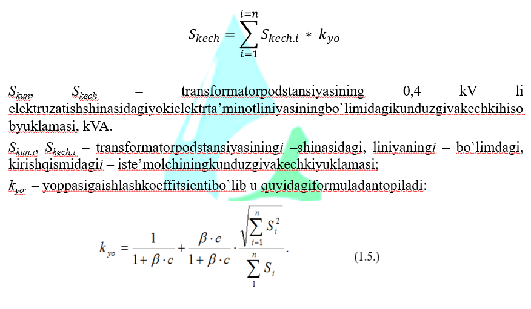

Elektr ta'minoti 2-amaliy
Qishloq xo’jaligidagi elektr tarmoqlarni hisoblash.
Reja:
Qishloqlardagi turar joylarini kirish qismidagi yuklamalarni hisoblash
Qishloq uylarining yuklamasi deb, yarim soat vaqt davomida elektr tarmog`idagi ulangan
xonadonning aktiv R va reaktiv Q quvvat ko`rinishida qabul qiladigan energiya miqdoriga
aytiladi. Yuklamalar alohida olingan bir uy yoki obyekt yoki bir guruh iste’molchilar uchun
kunduzgi Rkun (Qkun) va kechki Rkech (Qkech) sifatida qabul qilinadi.
Qishloq uylari alohida elektr energiyasi hisoblagichiga ega bo`lgan bir xonali va etajli, ko`p
xonali uylardagi ko`p xonalari bo`lgan iste’molchilar uchun hisoblanadi.
Mavjud elektr energiyasi sarfiga bog`iq holda yillik solishtirma elektr energiyasi iste’moli
1-nomogrammadan qabul qilinadi.
Ma’lumotlarni qabul qilishda yuklama miqdorini 2 yillik egri chizig`idan olish kerak, chunki
loyiha bajarilgandan so`ng elektr ta’minot tarmog`i ikkinchi yilda quriladi, u paytgacha elektr
jihojlar bilan jihozlanish ortib borganligi sabali yuklama ham ortadi.
Ko`p xonali uydagi bir xonali bir guruh elektr iste’molchilarning yuklamasi quyidagi formuladan
topiladi:
Bu yerda: n – uydagi xonadonlar soni yoki guruhdagi elektr iste’molchi xonadonlar soni.


* - yangidan loyihalanayotgan yoki elektr yuklamasi haqida ma’lumoti bo`lmagan xonadonning
kirish qismidagi yuklamasi.
** - to`liq jihozlangan va ko`p elektr iste’molchilarga ega, ko`p xonali uylar, obyektlar va
boshqa katta yuklamali elektr iste’molchilarni yuklamasi.
Qishloq xonadoni uchun hisob yuklamasi elektr qurilmalar va elektr isitgichlarni e’tiborga olgan
holda 1.2-jadvaldan qabul qilinadi.
1.2-jadval. Elektr plita va elektr isitgich bilan jihozlangan xonadonlarning hisob yuklamasi.
pUyning kirish qismidagi hisob yuklamasi kompyuter yordamida olingan ma’lumotlar asosida yoki
mavjud elektr iste’moli miqdorini jamlash asosida 1.1- va 1.2 - formulalar yordamida
hisoblanadi.
Ishlab chiqarish korxonalari, nasos stansiyalari, maishiy va boshqa elektr iste’molchilarning
kirish qismidagi yuklamasi 2-ilovadan qabul qilinadi.
Asosan elektr iste’molchilari yoritish qurilmalaridan iborat bo`lib, 3 tagacha kuch elektr
iste’molchilaridan tashkil topgan korxonalarning kirish qismidagi yuklamasini tanlashda mazkur
obyektning barcha yoritish qurilmalari va elektr iste’molchi uskunalar yuklamalarini arifmetrik
jamlash asosida tanlanadi.
Qishloqlarning ko`chalari, shahar va shaharchalarini yoritish qurilmalarining yuklamalari 3 -
ilovadan olinadi.
Qishloq va suv xo`jalik obyektlari, nasos stansiyalar, elektr stansiyalar, ishlab chiqarish
korxonalarining tevarak atrofini va tashqi qismlarini yoritishda ishlatiladigan qurilmalarining
yuklamasini hisoblashda 0,5 Vt/1 m2 hisobida tanlanadi.
Fermer xo`jaliklarining markazlari va korxonalar idoralari, boshqa obyektlarning atrofini
yoritishda bir bino uchun 250 Vt yuklama qabul qilinadi.
Bu yerda: Si – kirishqismidagii – iste’molchiningvaliniyaningi –
bo`limdagikunduzgivakechkiumumiyyuklamasi.
Yoppasigaishlashkoeffitsienti,
birqanchaiste’molchilaryokibirguruhiste’molchilarningbirgalikdaqo`shilganyuklamasinitarmoqningumumiyyig`indiyuklamagabo`linmasiorqaliizohlanadi.
7, 8 - va 9 - ilovalardakuchlanishi 0,38…10 kV li
tarmoqlardagielektriste’molchilarningumumiyyuklamasinihisoblashuchunkerakliyoppasigaishlashkoeffitsientiqiymatlariberilgan.
Yoppasigaishlashkoeffitsientiorqaliyuklamalariqiymatbo`yichao`zaro 4
martadanortiqfarqqilmaydiganiste’molchilarningyuklamalarinijamlashmumkin.
Agar iste’molchilarningyuklamasio`zaro 4 martadanortiqfarqqilsa (4-va 5-ilovadan)
quvvatgaqo`shimchaqiymatlarniqo`shishorqalihisoblanadi.
Bundaikkitaqo`shiluvchidankattaquvvatlisiga, kichkinasiningqo`shimchasiqo`shiladi (1.1 - rasm).
𝑆_(0−1 )= 𝑆_1 + 〖∆𝑆〗_2(1.6)
𝑆_1>𝑆_2
Iste’molchilarning elektr tarmog`iga ulanish sxemasi.
Aholi turar joylari va ishlab chiqarish korxonalarning umumiy yuklamasi, ularning bir vaqtda
ishlamasligini nazarda tutib, 4-ilovadagi ma’lumotlar asosida hisoblanadi.
Agar iste’molchining bitta maksimum yuklamasi (kunduzgi yoki kechki) ma’lum bo`lsa, qolgan
noma’lum yuklamalarni aniqlash uchun 1.3-jadvaldagi kunduzgi yoki kechki ishtirok
koeffitsientidan foydalanamiz.
Reaktiv quvvatning haqiqiy koeffitsienti tgφ va aktiv quvvatning haqiqiy koeffitsienti cosφ
kuchlanishi 35/10 kV li podstansiyada va 10 kV li uzatish liniyalaridagi yuklamaning katta
ulushiga qarab (6 - ilovadan) qabul qilinadi.
Kuchlanishi 35 – 110/10 kV podstansiyalardagi yuklama 10 kV kuchlanish tomonidan uzatiluvchi
quvvatni jamlash (5-ilova) asosida topiladi. Elektr ta’minot hududida meliorativ nasoslar, tik
quduqli nasoslar, issiqxonalar, paxta qabul qilish punktlari va don yig`ish maydonlari va h.k.
kabi mavsumiy iste’molchilar mavjud bo`lsa, hisob yuklamasi mavsum koeffitsientini inobatga
olgan holda (1.4-jadvaldan) aniqlanadi.
Mavsumiy yuklamalar domimiy ishlovchi iste’molchilarning umumiy yuklamasiga nisbatan olinadi va
u yozda 30% dan, bahorda 20% dan, kuzda 10% dan ortiqnini tashkil etadi. Shu sababli to`liq va
aniq ma’lumotga ega bo`lish uchun har bir mavsum bo`yicha hisoblarni olib borish kerak.
Agar mavsumiy yuklama qishki hisob yuklamasining kechki va kunduzgi maksimumidan katta bo`lsa, u
holda o`tkazgichning kesim yuzasi va transformator podstansiyasidagi quvvatni mavsumga mos holda
tanlash kerak.
Transformator podstansiyasining shinalaridagi yillik elektr energiyasi iste’molini hisob
yuklamasidan va undan yil davomidagi foydalanish vaqtiga bog`liq holda (10 - ilova) taxminiy
topish mumkin.





